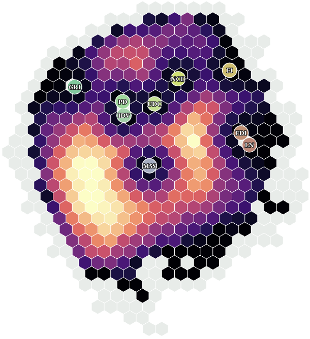

New paper
Quantifying “Nothing”

Abstract
Many questions in social science aim at capturing a lack of resources, the missingness of people and groups, or gaps in representation. Yet, most methods are developed to measure positive or negative quantities, rather than the size of absences. We introduce “nothing” as a quantity of interest in and of itself, as a bounded absence enclosed by a presence, with a size, a location and a scale, and develop desiderata for its measurement. We show how thinking of data as shapes, and using topology applied to data analysis, provides a tool to uncover the existence and relative sizes of holes, or “nothings,” that is robust to perturbations and to continuous deformations of the space. We then show how our method can detect food deserts without relying on a given threshold or scale, how it identifies the effects of genocide as missing generations, and how it can detect voids in representation based on voters’ and parties’ ideal points. We thus assign a measure to what previously could only be seen.